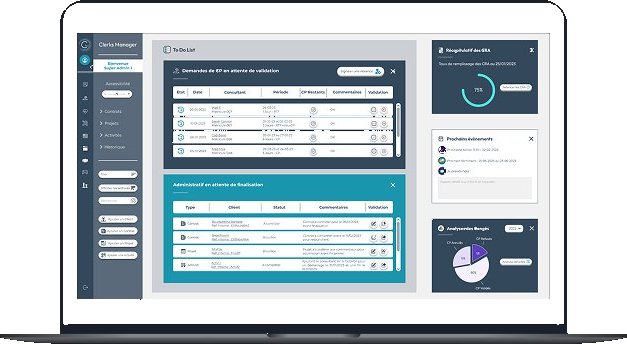
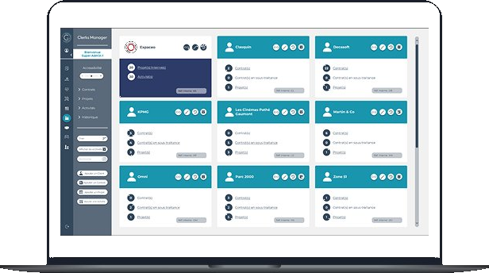
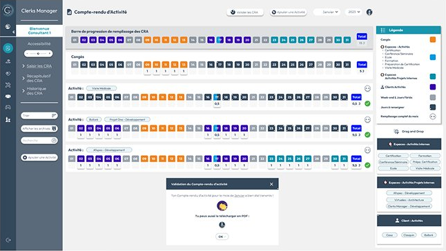
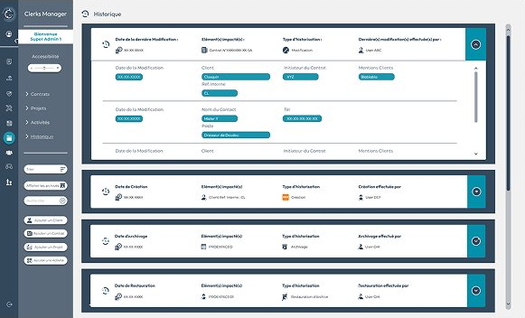

Projet 01 · Logiciel interne RH & Finance
Clerks
Refonte produit d'un outil interne RH & Finance pour améliorer l'adoption et l'efficacité des équipes.
Contexte
Clerks est un outil interne RH et Finance utilisé quotidiennement par plusieurs profils — Consultants, Managers, Administrateurs — pour gérer des activités clés : congés, suivi d'activité, facturation et données internes.
Avec le temps, le produit est devenu difficile à utiliser : complexité croissante, manque de lisibilité, difficulté à évoluer. Impact direct : perte d'efficacité et adoption limitée.
Problème produit
- Difficulté à accéder rapidement aux informations clés
- Workflows trop longs et peu intuitifs
- Interfaces surchargées, sans hiérarchisation claire
- Usage hétérogène selon les profils
Un produit fonctionnel, mais inefficace dans l'usage réel.
Démarche — Discovery
- Analyse des usages : étude des workflows, identification des tâches fréquentes
- Échanges utilisateurs : discussions avec différents profils, compréhension des frustrations
- Identification des points critiques : surcharge cognitive, navigation peu claire, manque d'adaptation aux rôles
Insight clé : le problème principal n'était pas le design visuel, mais l'organisation de l'information et des parcours.




Décisions & arbitrages
- Priorisation des workflows critiques (suivi d'activité, facturation, congés)
- Suppression des étapes à faible valeur pour réduire la complexité
- Réorganisation du produit par profil utilisateur (Consultant, Manager, Administrateur)
- Simplification de l'architecture de navigation
- Mise en place d'un design system pour homogénéiser les interfaces
Impact
- Prise en main plus rapide de l'outil
- Usage plus fluide au quotidien
- Réduction du temps d'accès aux informations clés
- Diminution des erreurs liées aux workflows
Retours utilisateurs : « Plus clair », « Plus simple à utiliser », « On trouve plus vite les infos ».